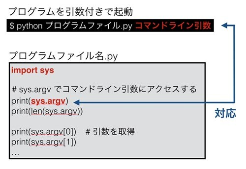
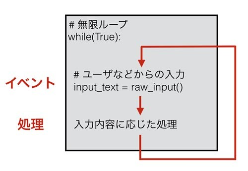

プログラムへの入力
本記事の内容
なぜ入力が必要化
WindowsやMacのGUIアプリケーションを使うときに、さまざまな入力を求められることはありませんか。 書き出すファイル名の入力や、利用するサーバを一覧から選択するといった場合などです。 このようにプログラムがユーザになんらかの入力を求めることは一般的です。 本章では今までのようにテキストベースのプログラムで「ユーザーからプログラムへの入力」を扱う方法についてお話します。
ユーザーからの入力の方法にはいくつかありますが、 ここではプログラムの起動時に指定する「コマンドライン引数」と、 プログラム中でユーザーに入力を求める「標準入力」、 そして標準入力を使ったインタラクティブなプログラムの書き方についてお話します。
コマンドライン引数の使い方についてお話しする前に、それがなぜ必要なのか説明しておきます。 まず以下のような「一人の生徒の成績表を表示するプログラム」のshow_score_sheet.pyがあるとします。
student = 'taro' score_sheet = get_score_sheet(student) # get_score_sheetは実装済みとする print(score_sheet)
上記の例では‘taro’の成績を取得しています。 では、‘taro’の代わりに‘jiro’の成績を取得したいと思ったらどのようにすればよいと思いますか。 成績取得をする関数に与える生徒名の‘taro’を‘jiro’にしてやればよいです。
student = 'jiro' # 生徒の名前を変更 score_sheet = get_score_sheet(student) print(score_sheet)
ただ、40人の生徒の成績を表示したい場合、プログラムのファイルを40回開いて、 その都度生徒の名前を変更してプログラムを動かすのは正直面倒くさいです。 それにそもそも「プログラムを開いてそれを修正する」などということは、そのプログラムの開発者でなければできません。 要するにプログラムファイルをいちいち書き変えるという対応での解決策はなしということです。
コマンドライン引数
解決方法はいろいろ考えられますが、最も一般的なものは、コマンドライン引数を利用することです。 コマンドライン引数とは、Pythonコマンドでプログラムを起動する際に与えるパラメータのことです。 たとえば以下のようなものになります。
python3 show_score_sheet.py taro
注目して欲しいのは3番目のキーワードのtaroです。 今まではPythonプログラムを実行するときは“python ファイル名”だけでしたが、そこにtaroが追加されています。 このtaroという与えられたキーワードを、Pythonのプログラムが内部で利用することで、 生徒の名前をプログラム中に直接書き込まなくても指定した生徒の成績を取得できるようになります。 今回は生徒名ですが、プログラムによってはファイル名であったり接続するサーバ名であったり、いろいろな利用方法があります。
コマンドライン引数の使い方は以下の図のようになります。

直感的に動きをつかんでもらえればよいのですが、起動時に与えたコマンドライン引数を、 プログラム中のsys.argvでアクセスしています。 図の細かい説明をするより、実際にコマンドライン引数を利用するプログラムを見たほうが早そうなので、以下に記載します。
# sysモジュールをimport import sys # sys.argvにコマンドライン引数が「リスト」で格納されている print(sys.argv) print(len(sys.argv))
これを実行すると以下のようになります。
% python3 test.py taro ['test.py', 'taro'] 2 % python3 test.py taro jiro ['test.py', 'taro', 'jiro'] 3
sys.argvをprintしているのでわかると思いますが、これは「リスト」です。 そのリストの中の最初の要素は必ずPythonの実行プログラムとなります。 今回は同じディレクトリのプログラムを相対パスで呼び出したのでファイル名だけですが、 絶対パスなどで呼び出すと要素も絶対パスとなります。
2番目以降の要素はコマンドライン引数に与えられた入力値と対応します。 上記例を見てもらうとわかりますが、引数のn番目がsys.argvのn＋1番目の要素になっています。 sys.argvはリストですので、その長さはlen()関数で取得できます。
このコマンドライン引数を先ほどの生徒の成績を取得するプログラムに組むこむのはそれほど難しくありません。
import sys # 誤った入力値の場合はメッセージとともにプログラム中断 if(len(sys.argv) < 2): print('usage: student.py student_name') exit() # sys.argvよりもわかりやすい変数名に代入して使う student = sys.argv[1] score_sheet = get_score_sheet(student) print(score_sheet)
コマンドライン引数の長さを調べて、2未満であれば使い方を表示して終了するようにしています。 無言で終了するのも何が原因なのかプログラムの利用者にわからないのでやめたほうがよいです。 コマンドライン引数に指定された内容は、プログラムの途中で都度チェックするよりも、 このように最初に調べてしまって問題があれば終了するとしたほうがきれいにコードを書けるかもしれません。 必要になった場所でチェックをするという実装だと、プログラムのコアとなるロジックに余計なものが食い込み、 汚くわかりにくいコードになりがちなので気をつけてください。
その後はコマンドライン引数の値を「わかりやすい名前の変数」に格納しています。 sys.argvの何番目という表現を延々とプログラム中で使い続けるとわかりにくく、 なおかつ引数の順番を変えたときなどの修正が面倒になるため避けたほうがいいです。 それ以降のコードは先ほどとまったく一緒ですので解説は割愛します。
なお、UnixやLinuxコマンドの「オプション(-v や --help など)」相当のことを実装したいのであれば、 sys.argvを使って根性で作りこむよりも専用のパッケージ「argparse」などを利用したほうがよいかと思います。
標準入力
ユーザーがプログラムに入力を与えるのはコマンドライン引数だけではありません。 標準入力も用います。先ほどの生徒の成績を取得するプログラムを例に、標準入力がどのようなものか説明します。
コマンドライン引数はプログラムの「起動時」に入力値を指定しますが、 標準入力はプログラムの「起動後」に入力値を与えるものです。 さっそくですが、生徒の成績表示プログラムを標準入力のものに書き換えてみます。
print('please input student name.') # 標準入力 student = input() print('your input is: ' + student)
1～2行目が変更されています。1行目は入力を促すテキストを出しているだけなのでたいしたことはないのですが、 重要なのは2行目です。これは以下のように動いています。
- input()関数が実行される
- pythonはユーザーからのキーボード入力を待つ
- ユーザーがキーボードでテキストを入力し、Enter(Return)を打つ
- pythonがユーザーからの入力を読み取り、input()関数がそれを文字列として返す
- 変数 studentが返された文字列を格納
長々と書きましたが、要するにinput()を書いた場所で「ユーザー入力」が求められて、 ユーザーが入力した値がinput()から返されるということです。図にまとめると以下のようになります。

上記プログラムを実行すると次のようになります。
python test.py please input student name. taro your input is: taro
なお、この標準入力を読み取る関数ですが python2 の頃は別名で raw_input() 関数でした。 間違えないように注意をしてください。
ほかにはsysモジュールのreadline関数も同じ目的で利用できます。 詳しくは書きませんが、以下のように使うことができます。
>>> import sys >>> line = sys.stdin.readline() hello >>> print(line) hello >>> line = input() hello >>> print(line) hello >>>
ほとんどinput()と同じですが、着目して欲しいのは改行コード“Enter(Return)”も取得されているということです。 上記サンプルを見ると、前者のreadline()は改行コードを含んでいますが、 後者のinput()は省かれています。 そのため、readline()を使う場合、必要であれば“文字列.strip()”などとして行末の改行コードを削ってください。
なお、かなりの小ネタですが、input()などの標準入力を挟むことで、 指示があるまでプログラムをわざと中断させておくという使い方もあります。 たとえばデモプログラムを実行する際に、デモとデモの間にinput()を入れておくと、 ひとつめのデモが終わったあとに、すぐに2つめに入らず標準入力で待ちに入ることができます。 意外と便利な使い方です。
さて、ちょっと余談です。コマンドライン引数と標準入力の2つのユーザー入力方法を示しましたが、 利用するとしたらどちらが優れているでしょうか。 これは個人の好みによるとは思いますが、どちらでもよい場合、 私は「Unixのコマンドの思想に沿っている」という点からコマンドライン引数を支持します。 ここではUnixとしていますが、この思想は、 LinuxはおろかWindowsであってもCUI(テキストのコンソール)を使う限りあてはまる大事な考え方です。 当然、Pythonで作成したプログラムも基本はテキストベースなので当てはまります。 Unixの思想にはいろいろあるのですが、「入力」に関しては以下が当てはまるでしょう。
- 一つひとつのコマンド(プログラム)が小さい範囲で完璧に仕事をこなすべき
- 大きなプログラムになんでもやらせるのは基本的に間違い
- 小さいプログラムを組み合わせることで大きな仕事を実現する
ここで重要となるのは「小さいプログラムを組み合わせる」ことです。 組み合わせる際に「あるプログラムから別のプログラムを呼び出す」ということをよくするのですが、 この場合、標準入力よりもコマンドライン引数のほうが圧倒的に簡単に使えます。 標準入力を使ってしまうと、プログラムが別のプログラムを「インタラクティブ(この出力がされたら、 これを入力するといった具合)」に制御する必要があります。 人間がプログラムとインタラクティブに対話するのは簡単ですが、 プログラムにそれをやらせるのは結構苦労することが多いです。 一方、コマンドライン引数だと、 プログラムを呼び出す際にパラメータを与えるだけで簡単に期待どおりの使い方をすることが可能です。 なので私は、コマンドライン引数のほうを好んで使っています。
ただ、標準入力が有効な場面というのも存在します。たとえば以下の場合です。
- ユーザーがインタラクティブに操作するプログラムを組む場合
- コマンドの履歴を残したくない場合(例えばパスワード入力など)
適切なものは時と場合によりますので、どちらが最適なのかよく考えて利用してください。 なお、パスワード入力に関してはgetpassというモジュールもありますので、 パスワード入力を求める場合は、それを使ってもよいでしょう。
インタラクティブなプログラムの作成
今までのプログラムは「ユーザーがプログラムを起動したら処理を実行し、それが終われば終了」というものでした。 ただ、なかにはこれにそぐわないプログラムもあります。 たとえばGUIのアプリケーションを想像してください。 だいたいはボタンを押したりテキスト入力をしたりして使い続けて、 必要がなくなった時点でウィンドウを閉じるなどして終了します。 これは「インタラクティブなプログラム」と呼ばれており、以下の処理を繰り返すことで実現されています。
- ユーザーからの入力をアプリケーションが待つ
- ユーザーからの入力に応じてアプリケーションがなんらかの処理を行う
- 処理が終わると1に戻る
これと同じことは、CLIのコンソールでもできます。その一番簡単な仕組みは以下の図のようなものとなります。

これも実例を用いて説明したほうがはやそうなので、簡単なサンプルプログラムを使います。 以下のサンプルでは「あるプログラムの設定ファイルを書き出すプログラム」を作成します。 設定ファイルは以下のようなものとします。
username = taro password = my_password server = 10.0.0.1
プログラムの流れは以下のようなものとなります。
- 最初に入力可能なオプションを示し、input()で待機
- ユーザーが入力
- ユーザー入力を読み取り、適切な入力であればそれを設定。不適切であればエラー表示
- exitと入力されれば終了し、内容をファイルに書き出す(終了条件)
これをプログラムにすると以下のようなものとなります。
username = '' password = '' server = '' while(True): # 無限ループ print('''please input option and its value. u USER_NAME p PASSWORD s SERVER_IP exit''') line = input() # ユーザーからの入力を取得 if(line == 'exit'): # 無限ループから離脱する条件 break words = line.split() # ユーザーからの入力内容をチェック if(len(words) != 2): print('Error') continue if(words[0] == 'u'): # 入力内容に応じた処理 username = words[1] elif(words[0] == 'p'): password = words[1] elif(words[0] == 's'): server = words[1] else: print('Error') # ループ終わり print('username = ' + username) print('password = ' + password) print('server = ' + server)
今回は書き出す代わりにprint出力させています。 先に提示した処理手順と完全に同じではありませんが、 ユーザーが入力した内容に応じて処理を行うということを繰り返します。
実際のプログラムでは処理をマルチスレッド(複数の処理を別々のタイムラインで実行)などとすることもありますが、 この「入力 -> 処理 -> 入力 -> ……」という処理の流れは非常に重要なので覚えておいてください。 バッチ処理以外のGUI(ボタンなどが押される -> なんらかのアクション)や、 サーバ(ネットワーク越しにクライアントの要求を受け取る -> アクション)のプログラミングも基本的にはこの流れとなり、 このような処理方式を「イベントドリブン」と呼びます。
このイベントドリブン型のプログラミングは、 ある程度プログラムが書けるようになると頻繁に使うロジックになるはずです。 ただ実際には、利用するフレームワーク(自分のプログラムを呼び出す親分プログラムみたいなもの)などに隠蔽されていたりしているので、 あまり意識しないことが多いかもしれません。
 印刷する
印刷する